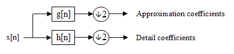

Learning Wavelets
Autoencoder

Latent space (z-variables) encodes inputs
Challenge of Audio

Audio CD sampling rate 44.1 kHz
 Multiscale Methods
Example: Fast Fourier Transform

Dilated Convolutions in DeepMind's WaveNet

Wavelets



A Different Approach?

Some Recent Work

Recoskie & Mann arXiv:1802.02961 [no exact reconstruction]